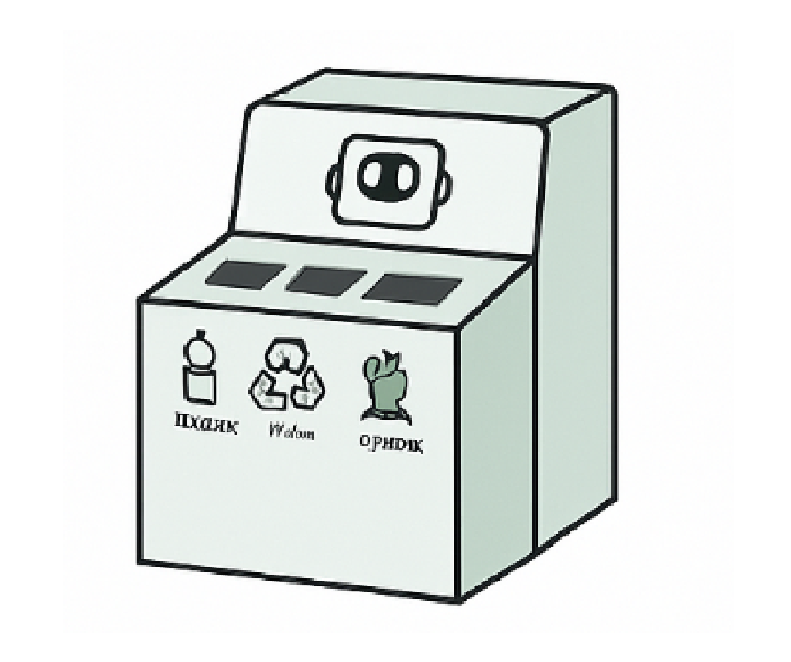

Өндірістік кешендер
RoboSort зауыттар мен өндірістік орындарда қалдықтарды автоматты түрде сұрыптап, қызметкерлердің жұмысын жеңілдетеді әрі экологиялық стандарттарды сақтауға көмектеседі.

RoboSort қолдану салалары
RoboSort құрылғысы әртүрлі салада тиімді қолданылады:
- Білім беру мекемелері: оқушылар мен студенттерге экологиялық мәдениетті үйрету
- Қоғамдық орындар: автоматты тазалық жүйесін енгізу
- Өндірістік кешендер: қалдықтарды басқару шығындарын азайту
- Супермаркеттер мен сауда орталықтары: тұтынушылардың экологиялық жауапкершілігін арттыру
Жоба артықшылықтары:
- Мемлекеттік және жеке секторға бейімделген
- Модульдік жүйе – масштабтауға болады
- Деректерді жинау және талдау мүмкіндігі